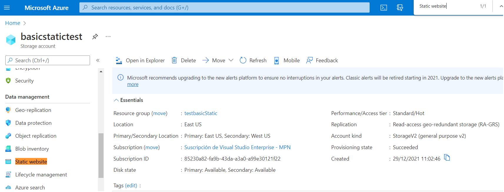
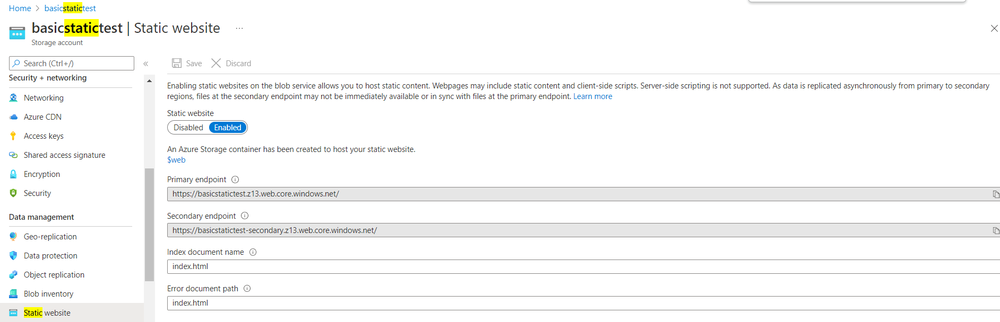
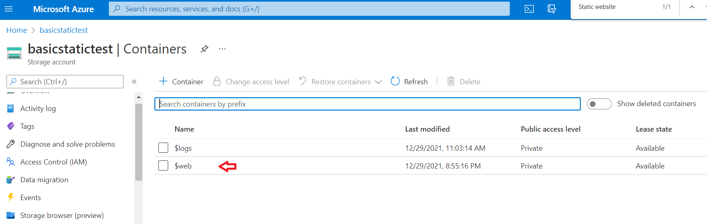
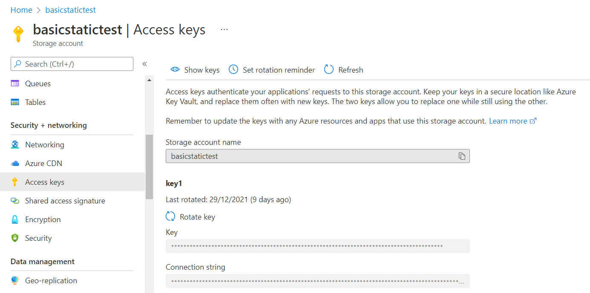
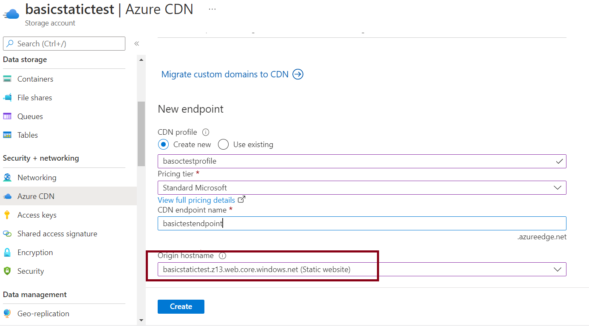
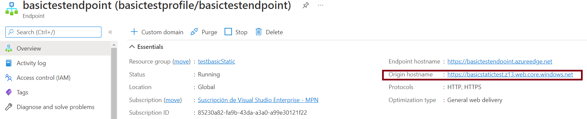
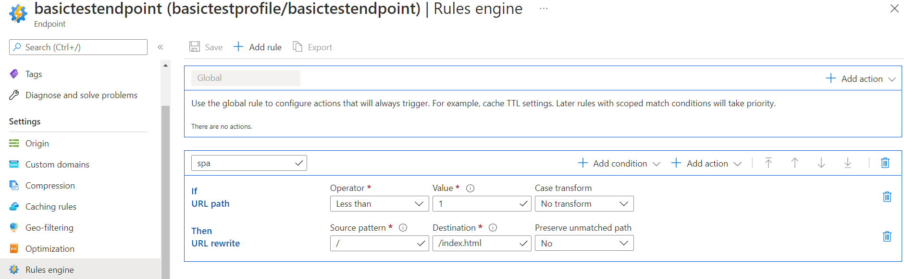

To deploy an Angular application to Azure Storage Websites, use the Application deployment tool as explained in Deploy Front-end applications to Azure Blob Storage.
This document shows the steps to prepare the cloud infrastructure, so as to perform the deployment afterwards. Basically, we will create an Azure Storage account where the static files will reside, and a CDN.
Summary:
You can host a static website by enabling the static website feature on an Azure blob storage account.
1. To access Azure Storage, you'll need an Azure subscription.
2. Every access to Azure Storage takes place through a storage account. See Create a Storage account.
The first step is to configure your storage account to host a static website in the Azure portal. When you configure your account for static website hosting, Azure Storage automatically creates a container named $web. The $web container will contain the files for your static website. See Configure static web site hosting.
Navigate to your storage account within Azure, click on the static website menu option, and set the following:
Click Save.
Once you’ve enabled a static website within your storage account, your storage account will contain a container called $web; this is the container where the deployment will upload the Angular build files.
As part of the process, you’ll also have been assigned a primary endpoint. Note the primary endpoint; this is the URL to the new website, and it will be necessary when configuring the CDN you will create next.



To get the Access Key (to fill in the "Storage Account Key" property at deployment), go through the Access Keys pane of the Storage account.

At deployment, all of the files from your distribution folder are uploaded to the $web container.
To test that everything works, you can access the application using the primary endpoint URL, for example.
However, since Static websites have some limitations, you'll probably have to use Azure Content Delivery Network (Azure CDN).
First, define a CDN profile, and a CDN endpoint whose "origin host name" should be the same as the static website endpoint previously defined.
Select your storage account and go through the Azure CDN menu option on the left hand pane. Next, enter the required data and select "create."

The result will be as follows:

As Angular is a Single Page Application (SPA), you will need a URL Rewrite rule that returns the app’s root index.html file for any request to a path that isn’t an actual file. See the detailed explanation here.
So, go through the Rules Engine option on the left hand pane of the CDN endpoint and define a rule as shown in the figure:

For more information, read the Azure documentation.
The application can be accessed using the CDN endpoint URL. Find the endpoint URL for the CDN endpoint by going back to the endpoint overview. Copy the ‘Endpoint hostname’ in your browser.
Redirect users to Https
CDN troubleshoot endpoint
| Backlinks |
| Deploy Front-end applications to Azure Blob Storage |